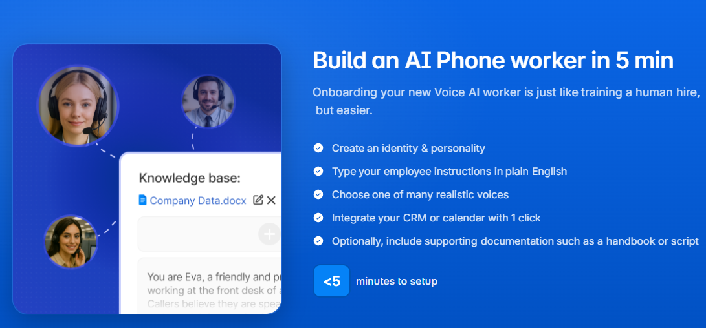

Lippy AI: the phone bot you probably won’t notice.

For years we’ve endured the robotic monotone of automated phone systems: “Press 1 for billing, press 2 to scream into the void.” Lippy AI is trying to replace that entire experience with something much more convincing. The system answers inbound calls, talks naturally, schedules appointments, integrates with calendars and CRMs, and can even switch between dozens of languages. The unsettling part is that it genuinely sounds human. I tried it myself and the conversation flowed so smoothly that if someone told me it was a real receptionist, I probably would have believed them.
Technically speaking, AI voices like this are supposed to follow strict rules around robocalls and automated outreach. In practice, however, the realism of modern voice models means many people simply don’t realize they’re talking to a machine. That’s created an interesting gray area where daring individuals can deploy AI agents that handle thousands of calls without callers noticing anything unusual. The AI listens, responds with low latency, understands turn-taking in conversation, and books appointments while sounding polite and slightly more patient than any human customer service rep has ever been.
From a business perspective, the appeal is obvious: answer 100% of calls, never miss a lead, and avoid paying a room full of receptionists. From a societal perspective, it means we’re entering an era where a surprising number of phone conversations may not involve another human at all. The strange thing is that the technology is now good enough that most people simply won’t notice. If you want to see the system that’s quietly replacing your front desk, you can check it out here:
lippy.ai